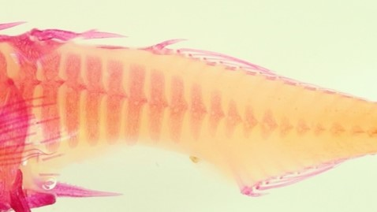
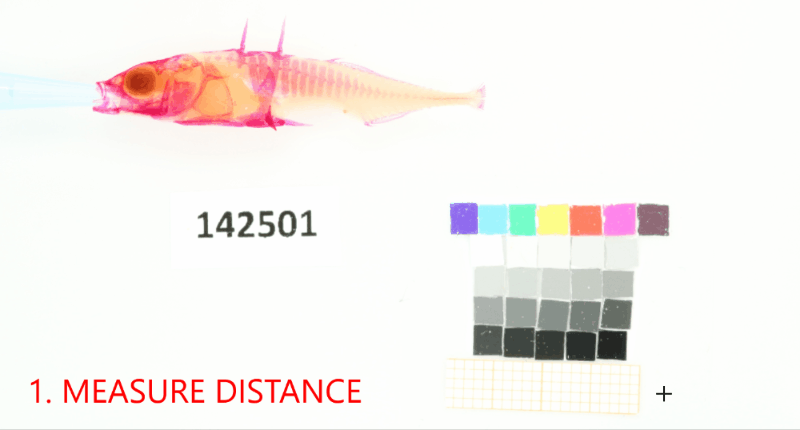
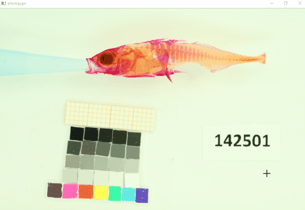

Example 5: Stickleback morphometrics - body and armor-plate shape¶
Variation in continuous phenotypic traits like shape or area of certain structures are difficult to quantify with landmarks, because they are too complex or have no underlying assumption of homology. In this example, the number and area of armor plating was measured as a continuous trait in a two-step process: first, a mask was set around the posterior region that contains the plates, second, the red channel (highest signal-to-noise-ratio) of the image was thresholded.
In this example we use the watershed algorithm, which helps to separate detected objects into “peaks of wanted information” and “valleys of unwanted information”. The principle is explained here: https://docs.opencv.org/master/d3/db4/tutorial_py_watershed.html

Input - Stained threespine stickleback. The size of plates at a given plate index varies within at between ecotypes (e.g. lake and stream morphs)

Results - After applying adaptive thresholding and watershed algorithms, the plates separate. Where this is not the case they can be separated manually.
High throughput workflow 1 (Thresholding based)¶
First we need to create a project, as described in Tutorial 3 and Tutorial 4.
Note: If you have already created a project you can skip the following steps and load the project with pp.project.load("path/to/project").
[1]:
import phenopype as pp
## relative from phenopype-master/tutorials
project_root = r"_temp/output/ex5_project"
image_dir = "images"
reference_image = "images/stickleback_side.jpg"
Create project¶
[2]:
ex5_1 = pp.project(root_dir=project_root)
--------------------------------------------
Phenopype will create a new project at
D:\workspace\git\phenopype\tutorials\_temp\output\ex5_project
Proceed? (y/n)
y
Warning - project root_dir already exists - overwrite? (y/n)y
"D:\workspace\git\phenopype\tutorials\_temp\output\ex5_project" created (overwritten)
project attributes written to D:\workspace\git\phenopype\tutorials\_temp\output\ex5_project\attributes.yaml
--------------------------------------------
This will create a folder structure and allows for easy creation of the pype-configuration files needed for high throughput. First we add the image files in the directory, but only “stickle1”, “stickle2”, and “stickle3”.
[3]:
ex5_1.add_files(image_dir=image_dir,
include="stickle",
exclude=["side","top"])
--------------------------------------------
phenopype will search for image files at
D:\workspace\git\phenopype\tutorials\images
using the following settings:
filetypes: ['jpg', 'JPG', 'jpeg', 'JPEG', 'tif', 'png', 'bmp'], include: stickle, exclude: ['side', 'top'], mode: copy, recursive: False, resize: False, unique: path
Found image stickle1.JPG - phenopype-project folder 0__stickle1 created
Found image stickle2.JPG - phenopype-project folder 0__stickle2 created
Found image stickle3.JPG - phenopype-project folder 0__stickle3 created
Found 3 files
--------------------------------------------
Now we add the appropriate configuration file. As for the other examples I have created a template (“ex5”) with appropriate settings, which is passed to the pype using template="ex5_1".
[4]:
pp.pype_config_templates
[4]:
{'demo.yaml': 'd:\\workspace\\git\\phenopype\\phenopype\\templates\\demo.yaml',
'ex1.yaml': 'd:\\workspace\\git\\phenopype\\phenopype\\templates\\ex1.yaml',
'ex2.yaml': 'd:\\workspace\\git\\phenopype\\phenopype\\templates\\ex2.yaml',
'ex3.yaml': 'd:\\workspace\\git\\phenopype\\phenopype\\templates\\ex3.yaml',
'ex5_1.yaml': 'd:\\workspace\\git\\phenopype\\phenopype\\templates\\ex5_1.yaml',
'ex5_2.yaml': 'd:\\workspace\\git\\phenopype\\phenopype\\templates\\ex5_2.yaml',
'ex6.yaml': 'd:\\workspace\\git\\phenopype\\phenopype\\templates\\ex6.yaml',
'ex7.yaml': 'd:\\workspace\\git\\phenopype\\phenopype\\templates\\ex7.yaml',
'ex8_1.yaml': 'd:\\workspace\\git\\phenopype\\phenopype\\templates\\ex8_1.yaml',
'ex8_2.yaml': 'd:\\workspace\\git\\phenopype\\phenopype\\templates\\ex8_2.yaml',
'landmarks1.yaml': 'd:\\workspace\\git\\phenopype\\phenopype\\templates\\landmarks1.yaml',
'landmarks2.yaml': 'd:\\workspace\\git\\phenopype\\phenopype\\templates\\landmarks2.yaml',
'tut3.yaml': 'd:\\workspace\\git\\phenopype\\phenopype\\templates\\tut3.yaml'}
[5]:
ex5_1.add_config(name = "v1", template="ex5_1")
New pype configuration created (ex5_1.yaml) from phenopype template:
d:\workspace\git\phenopype\phenopype\templates\ex5_1.yaml
pype_v1.yaml created for 0__stickle1
pype_v1.yaml created for 0__stickle2
pype_v1.yaml created for 0__stickle3
Now we add reference image to create a scale-template so we can adjust our landmark coordinate space. This is important if for example the distance between the camera and your sample changes.

[6]:
ex5_1.add_reference(name="v1",
reference_image = reference_image,
template=True,
overwrite=True)
Reference image loaded from images/stickleback_side.jpg
- measure pixel-to-mm-ratio
Reference set
- add column length
Template selected
Reference image saved under D:\workspace\git\phenopype\tutorials\_temp\output\ex5_project\reference_v1.tif
Reference image saved under D:\workspace\git\phenopype\tutorials\_temp\output\ex5_project\reference_template_v1.tif
Saved reference info to project attributes.
setting active reference to "v1" for 0__stickle1 (active=True)
setting active reference to "v1" for 0__stickle2 (active=True)
setting active reference to "v1" for 0__stickle3 (active=True)
Afterwards, we save the project (to the root folder).
[7]:
pp.project.save(ex5_1)
Project data saved under D:\workspace\git\phenopype\tutorials\_temp\output\ex5_project\project.data.
Load project¶
[8]:
ex5_1 = pp.project.load(project_root)
--------------------------------------------
Project loaded from
D:\workspace\git\phenopype\tutorials\_temp\output\ex5_project
Project has 3 image folders
--------------------------------------------
The procedure¶
The basic points of the procedure are:
Draw a mask around the area of interest (i.e. the plates)
Let the algorithm find the scale
Enter the ID from the reference card into the mask

The rest is automatic: a watershed algorithm helps to separate the plates. Sensitivity of the algorithm can be mostly controlled with the distance_cutoff argument, but also playing around with the thresholding arguments (blocksize and constant) can help to improve results.
Sometimes the overall results are goog except for one or two cases of plates that touch each other. In this case, the draw function can be used to separate those plates without changing the whole procedure.
Now we can run the pype routine with a simple loop on ex5_1.dirpaths, which is a list of all project directories that contain the copied raw images and the config files we generated before.
Move on to the next image with Ctrl+Enter, interrupt the loop with Esc. To resume to the point where you left, add the skip argument so directory with processed files are not run again.
[9]:
for dirpath in ex5_1.dirpaths:
out = pp.pype(dirpath, name="v1", skip=True)
Succesfully loaded existing pype config (pype_config_v1.yaml) from:
D:\workspace\git\phenopype\tutorials\_temp\output\ex5_project\data\0__stickle1\pype_config_v1.yaml
------------+++ new pype iteration 2021:05:10 16:03:27 +++--------------
=== AUTOLOAD ===
- project level reference information loaded for v1
- reference template image loaded from root directory
PREPROCESSING
create_mask
- creating mask
detect_reference
---------------------------------------------------
Reference card found with 259 keypoint matches:
template image has 36.330978516962624 pixel per mm.
current image has 35.2 pixel per mm.
= 96.806 % of template image.
---------------------------------------------------
enter_data
- add column ID
SEGMENTATION
blur
threshold
- excluding pixels from 1 drawn masks
- including pixels from 1 drawn masks
morphology
watershed
- found 27 contours that match criteria
draw
- drawing
zero coordinates - redo drawing!
segmentation.draw: ValueError - No objects to concatenate
find_contours
- found 13 contours that match criteria
VISUALIZATION
select_canvas
- red channel
draw_contours
draw_masks
drawing mask: mask1
drawing mask: reference
EXPORT
save_contours
- contours saved under D:\workspace\git\phenopype\tutorials\_temp\output\ex5_project\data\0__stickle1\contours_v1.csv.
=== AUTOSAVE ===
save_canvas
- canvas saved under D:\workspace\git\phenopype\tutorials\_temp\output\ex5_project\data\0__stickle1\canvas_v1.jpg.
save_data_entry
- add column ID
save_masks
- masks saved under D:\workspace\git\phenopype\tutorials\_temp\output\ex5_project\data\0__stickle1\masks_v1.csv.
save_reference
v1
- save reference to attributes
------------+++ finished pype iteration +++--------------
-------(End with Ctrl+Enter or re-run with Enter)--------
TERMINATE
Succesfully loaded existing pype config (pype_config_v1.yaml) from:
D:\workspace\git\phenopype\tutorials\_temp\output\ex5_project\data\0__stickle2\pype_config_v1.yaml
------------+++ new pype iteration 2021:05:10 16:03:45 +++--------------
=== AUTOLOAD ===
- project level reference information loaded for v1
- reference template image loaded from root directory
PREPROCESSING
create_mask
- creating mask
An exception has occurred, use %tb to see the full traceback.
SystemExit:
TERMINATE (by user)
WARNING: To exit: use 'exit', 'quit', or Ctrl-D.
[10]:
## inspect results
## DataFrame
out.container.df_contours.drop(columns=["order", "idx_child", "idx_parent", "coords"])
[10]:
| filename_original | filename_phenopype | width | height | current_px_mm_ratio | ID | contour | center | diameter | area | |
|---|---|---|---|---|---|---|---|---|---|---|
| 0 | stickle1.JPG | copy_stickle1.JPG | 2400 | 1600 | 35.2 | 142501 | 1 | (1635, 444) | 22 | 174 |
| 1 | stickle1.JPG | copy_stickle1.JPG | 2400 | 1600 | 35.2 | 142501 | 2 | (1589, 440) | 32 | 248 |
| 2 | stickle1.JPG | copy_stickle1.JPG | 2400 | 1600 | 35.2 | 142501 | 3 | (1364, 410) | 34 | 194 |
| 3 | stickle1.JPG | copy_stickle1.JPG | 2400 | 1600 | 35.2 | 142501 | 4 | (1662, 385) | 36 | 320 |
| 4 | stickle1.JPG | copy_stickle1.JPG | 2400 | 1600 | 35.2 | 142501 | 5 | (1636, 380) | 41 | 365 |
| ... | ... | ... | ... | ... | ... | ... | ... | ... | ... | ... |
| 8 | stickle1.JPG | copy_stickle1.JPG | 2400 | 1600 | 35.2 | 142501 | 9 | (1521, 365) | 101 | 1235 |
| 9 | stickle1.JPG | copy_stickle1.JPG | 2400 | 1600 | 35.2 | 142501 | 10 | (1485, 360) | 114 | 1559 |
| 10 | stickle1.JPG | copy_stickle1.JPG | 2400 | 1600 | 35.2 | 142501 | 11 | (1453, 355) | 119 | 1638 |
| 11 | stickle1.JPG | copy_stickle1.JPG | 2400 | 1600 | 35.2 | 142501 | 12 | (1423, 355) | 128 | 1755 |
| 12 | stickle1.JPG | copy_stickle1.JPG | 2400 | 1600 | 35.2 | 142501 | 13 | (1391, 344) | 115 | 1542 |
13 rows × 10 columns
[11]:
## image
pp.show_image(out.container.canvas)
High throughput workflow 2 (Manual approach)¶
Sometimes thresholding algorithms don’t separate plates that are too close to each other or overap. For this case, the create_mask function introduced above can be used to separate out specific plates.
Manual polygon drawing using the mask tool. Although this is more manual work, it may sometimes be the only way to separate overlapping or connected body-structures.
Just as before we need to create a phenpype project, add the image files, and the appropriate template ("ex5_2"). As above, we also have set the reference image for scale detection.
[12]:
import phenopype as pp
## relative from phenopype-master/tutorials
project_root = r"_temp/output/ex5_project2"
image_dir = "images"
reference_image = "images/stickleback_side.jpg"
[13]:
ex5_2 = pp.project(root_dir=project_root)
ex5_2.add_files(image_dir=image_dir,
include="stickle",
exclude=["side","top"])
ex5_2.add_config(name = "v1",
template="ex5_2")
ex5_2.add_reference(name="v1",
reference_image = reference_image,
template=True,
overwrite=True)
pp.project.save(ex5_2)
--------------------------------------------
Phenopype will create a new project at
D:\workspace\git\phenopype\tutorials\_temp\output\ex5_project2
Proceed? (y/n)
y
Warning - project root_dir already exists - overwrite? (y/n)y
"D:\workspace\git\phenopype\tutorials\_temp\output\ex5_project2" created (overwritten)
project attributes written to D:\workspace\git\phenopype\tutorials\_temp\output\ex5_project2\attributes.yaml
--------------------------------------------
--------------------------------------------
phenopype will search for image files at
D:\workspace\git\phenopype\tutorials\images
using the following settings:
filetypes: ['jpg', 'JPG', 'jpeg', 'JPEG', 'tif', 'png', 'bmp'], include: stickle, exclude: ['side', 'top'], mode: copy, recursive: False, resize: False, unique: path
Found image stickle1.JPG - phenopype-project folder 0__stickle1 created
Found image stickle2.JPG - phenopype-project folder 0__stickle2 created
Found image stickle3.JPG - phenopype-project folder 0__stickle3 created
Found 3 files
--------------------------------------------
New pype configuration created (ex5_2.yaml) from phenopype template:
d:\workspace\git\phenopype\phenopype\templates\ex5_2.yaml
pype_v1.yaml created for 0__stickle1
pype_v1.yaml created for 0__stickle2
pype_v1.yaml created for 0__stickle3
Reference image loaded from images/stickleback_side.jpg
- measure pixel-to-mm-ratio
Reference set
- add column length
Template selected
Reference image saved under D:\workspace\git\phenopype\tutorials\_temp\output\ex5_project2\reference_v1.tif
Reference image saved under D:\workspace\git\phenopype\tutorials\_temp\output\ex5_project2\reference_template_v1.tif
Saved reference info to project attributes.
setting active reference to "v1" for 0__stickle1 (active=True)
setting active reference to "v1" for 0__stickle2 (active=True)
setting active reference to "v1" for 0__stickle3 (active=True)
Project data saved under D:\workspace\git\phenopype\tutorials\_temp\output\ex5_project2\project.data.
[14]:
for dirpath in ex5_2.dirpaths:
out = pp.pype(dirpath, name="v1", skip=False)
Succesfully loaded existing pype config (pype_config_v1.yaml) from:
D:\workspace\git\phenopype\tutorials\_temp\output\ex5_project2\data\0__stickle1\pype_config_v1.yaml
------------+++ new pype iteration 2021:05:10 16:06:15 +++--------------
=== AUTOLOAD ===
- project level reference information loaded for v1
- reference template image loaded from root directory
PREPROCESSING
create_mask
- creating mask
detect_reference
---------------------------------------------------
Reference card found with 248 keypoint matches:
template image has 38.41874542459709 pixel per mm.
current image has 37.2 pixel per mm.
= 96.763 % of template image.
---------------------------------------------------
enter_data
- add column ID
SEGMENTATION
blur
threshold
- excluding pixels from 1 drawn masks
- including pixels from 1 drawn masks
draw
- drawing
zero coordinates - redo drawing!
segmentation.draw: ValueError - No objects to concatenate
find_contours
- found 1 contours that match criteria
VISUALIZATION
select_canvas
- red channel
draw_contours
draw_masks
drawing mask: mask1
drawing mask: reference
EXPORT
save_contours
- contours saved under D:\workspace\git\phenopype\tutorials\_temp\output\ex5_project2\data\0__stickle1\contours_v1.csv.
=== AUTOSAVE ===
save_canvas
- canvas saved under D:\workspace\git\phenopype\tutorials\_temp\output\ex5_project2\data\0__stickle1\canvas_v1.jpg.
save_data_entry
- add column ID
save_masks
- masks saved under D:\workspace\git\phenopype\tutorials\_temp\output\ex5_project2\data\0__stickle1\masks_v1.csv.
save_reference
v1
- save reference to attributes
------------+++ finished pype iteration +++--------------
-------(End with Ctrl+Enter or re-run with Enter)--------
------------+++ new pype iteration 2021:05:10 16:06:29 +++--------------
=== AUTOLOAD ===
- project level reference information loaded for v1
- reference template image loaded from root directory
PREPROCESSING
create_mask
- mask with label mask1 already created (edit/overwrite=False)
detect_reference
- reference already detected (overwrite=False)
enter_data
- column ID already created (overwrite=False)
SEGMENTATION
blur
threshold
- excluding pixels from 1 drawn masks
- including pixels from 1 drawn masks
draw
- drawing
zero coordinates - redo drawing!
segmentation.draw: ValueError - No objects to concatenate
find_contours
- found 1 contours that match criteria
VISUALIZATION
select_canvas
- red channel
draw_contours
draw_masks
drawing mask: mask1
drawing mask: reference
EXPORT
save_contours
- contours saved under D:\workspace\git\phenopype\tutorials\_temp\output\ex5_project2\data\0__stickle1\contours_v1.csv (overwritten).
=== AUTOSAVE ===
save_canvas
- canvas saved under D:\workspace\git\phenopype\tutorials\_temp\output\ex5_project2\data\0__stickle1\canvas_v1.jpg (overwritten).
save_data_entry
- add column ID (overwriting)
save_masks
- masks saved under D:\workspace\git\phenopype\tutorials\_temp\output\ex5_project2\data\0__stickle1\masks_v1.csv (overwritten).
save_reference
v1
- save reference to attributes (overwriting)
------------+++ finished pype iteration +++--------------
-------(End with Ctrl+Enter or re-run with Enter)--------
TERMINATE
Succesfully loaded existing pype config (pype_config_v1.yaml) from:
D:\workspace\git\phenopype\tutorials\_temp\output\ex5_project2\data\0__stickle2\pype_config_v1.yaml
------------+++ new pype iteration 2021:05:10 16:06:32 +++--------------
=== AUTOLOAD ===
- project level reference information loaded for v1
- reference template image loaded from root directory
PREPROCESSING
create_mask
- creating mask
An exception has occurred, use %tb to see the full traceback.
SystemExit:
TERMINATE (by user)
WARNING: To exit: use 'exit', 'quit', or Ctrl-D.
The data containing the size of each contour are now in “contours_v1.csv”, just as above. Using the “current_px_mm_ratio” colum you can calculate size and area in mm, with the first (x-coordinate) value in the “center” colum you can order the plates from left to right.
[ ]:
[ ]: